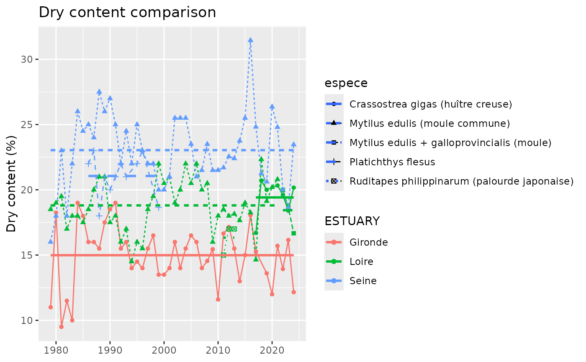
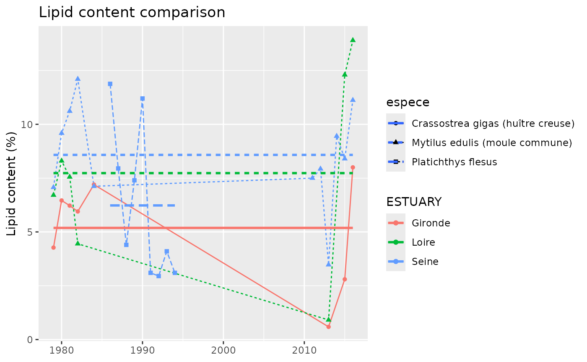

vignettes/data_contamination_biometrics.Rmd
data_contamination_biometrics.Rmd
data_ROCCHMV_bio_long <- data |>
filter(PARAMETRE_LIBELLE %in% c("Matière sèche", "Taille de l'individu", "Lipides totaux")) |>
group_by(ESTUARY, YEAR, PARAMETRE_LIBELLE, UNITE, espece) |>
summarise(RESULTAT = mean(RESULTAT), .groups = "drop") |>
unite(col = "PARAMETRE_LIBELLE_UNITE", PARAMETRE_LIBELLE, UNITE, sep = "_", remove = TRUE)ICES: M.edulis 16.4%, M. galloprovincialis 19.0%, C. gigas 18.0%
Stronger difference between estuaries than between species
data_ROCCHMV_bio_long |>
filter(PARAMETRE_LIBELLE_UNITE == "Matière sèche_%") |>
ggplot(aes(x = YEAR, y = RESULTAT, colour = ESTUARY, linetype = espece, shape = espece)) +
geom_line()+
geom_point() +
geom_smooth(method = "lm", formula = y ~ 1, se = FALSE) +
labs(title = "Dry content comparison",
x = NULL, y = "Dry content (%)")
ICES: M.edulis 1.4 %lipww , M. galloprovincialis 2.0%lipww, C. gigas 1.9%lipww ICES: M.edulis 8.54 %lipdw , M. galloprovincialis 10.53%lipdw, C. gigas 10.56%lipdw
data_ROCCHMV_bio_long |>
filter(PARAMETRE_LIBELLE_UNITE == "Lipides totaux_%") |>
ggplot(aes(x = YEAR, y = RESULTAT, colour = ESTUARY, linetype = espece, shape = espece)) +
geom_line()+
geom_point() +
geom_smooth(method = "lm", formula = y ~ 1, se = FALSE) +
labs(title = "Lipid content comparison",
x = NULL, y = "Lipid content (%)")
data_ROCCHMV_bio <- data_ROCCHMV_bio_long |>
group_by(ESTUARY, PARAMETRE_LIBELLE_UNITE) |>
summarise(RESULTAT = mean(RESULTAT), .groups = "drop") |>
pivot_wider(names_from = PARAMETRE_LIBELLE_UNITE, values_from = RESULTAT)
usethis::use_data(data_ROCCHMV_bio, overwrite = TRUE)## ✔ Setting active project to
## "/home/runner/work/esteem.overview/esteem.overview".## ✔ Saving "data_ROCCHMV_bio" to "data/data_ROCCHMV_bio.rda".## ☐ Document your data (see <https://r-pkgs.org/data.html>).